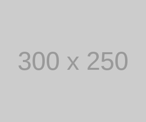

CSS変数で画像を指定すると、Chrome と Safari では相対パスの解釈が異なるため一工夫必要になる。
一番簡単な解決方法は絶対パスにすること。
今回表示する画像

Chrome…○ / Safari…×
--img:url('../img/300x250.png');
Chrome…× / Safari…○
--img:url('img/300x250.png');
Chrome…○ / Safari…○
--img:url('img/300x250.png');
// html内に記述
.imgbox-2{
background-image: var(--img);
}